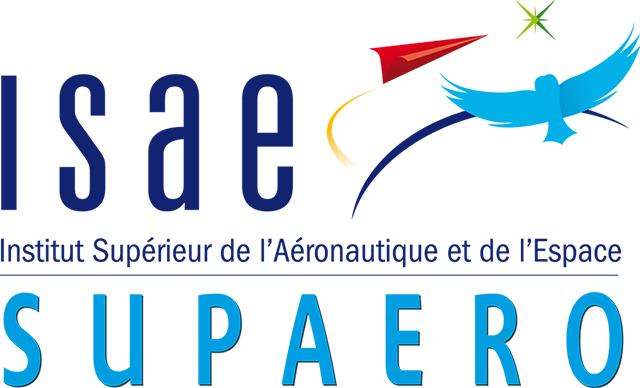
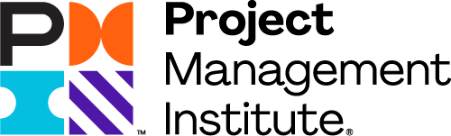

Liftoff · Education · 2012 → today
A strong foundation
Aerospace engineering, then systems engineering and project management: the tools to build satellites.
Aerospace engineering first, then systems engineering and project management. The learning never stops.

M.Sc. Aerospace Mechanics & Avionics2015 – 2017 · structuresExcellence AwardStudent representativeProfessional credentials
 Architecture & Systems EngineeringMIT xPRO · 2021
Architecture & Systems EngineeringMIT xPRO · 2021
Project Management ProfessionalPMP® · 2024 Systems Engineering & ExcellenceChief-engineer track · 2026
Systems Engineering & ExcellenceChief-engineer track · 2026Fairing separation · the satellite revealed
Every subsystem, every level
Structure carries, propulsion moves, payload earns. I have worked in all three, from analyst to head of.
With the fairing gone, the whole satellite shows.
Structure carries, propulsion moves, payload earns.
I have worked in all three, from analyst to head of.
On station · promoted Aug 2026
Head of Payload Architects
Today I lead 10+ architects designing the next generation of telecom payloads.
Leading 10+ payload architects and mission managers: we support bids and design Airbus's next telecom payloads, across all orbits.